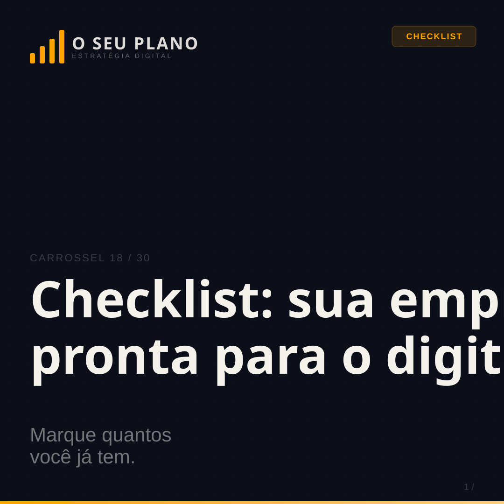

01. Sua empresa perde clientes antes de abrir a boca.
02. @gmail.com está te custando clientes.
03. Como aparecer no Google Maps gratuitamente.
04. Antes e depois de estruturar a presença digital.
05. E-mail profissional. Em menos de 24h.
06. 7 erros que fazem seu Instagram parecer amador.
07. WhatsApp Business: do amador ao profissional.
08. Site ou landing page? Você está escolhendo errado.
09. Seus concorrentes aparecem no Google. Você não.
10. Sua bio do Instagram está afastando clientes.
11. Quanto custa ter presença digital profissional?
12. O que seu cliente pesquisa antes de te contratar.
13. 3 perguntas. Descubra onde sua empresa está no digital.
14. 30 dias de conteúdo. Para qualquer negócio. Do zero.
15. Como responder avaliações no Google.
16. 5 ferramentas gratuitas que todo MEI precisa.
17. Sua logo está comunicando a mensagem certa?
18. Checklist: sua empresa está pronta para o digital?

19. Presença digital não é ter Instagram.
20. De 0 a presença digital profissional em 7 dias.
21. Como usar Reels para atrair clientes sem aparecer.
22. Como pedir e usar depoimentos de clientes.
23. LinkedIn para profissionais liberais: por onde começar.
24. Como montar um portfólio digital do zero.
25. Quanto cobrar? Como precificar seus serviços no digital.
26. Como anunciar no Instagram com R$ 10 por dia.
27. Atendimento que fideliza: o que fazer depois da venda.
28. Como criar conteúdo que vende sem parecer vendedor.
29. Parcerias digitais: como crescer junto com outros profissionais.
30. Como saber se seu marketing digital está funcionando.